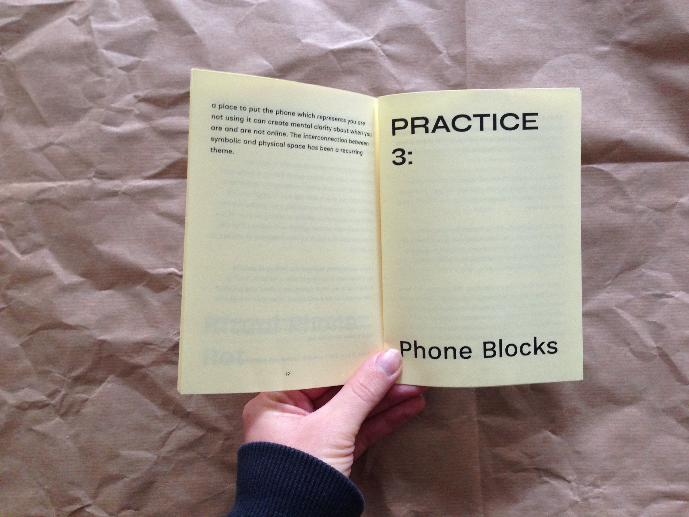
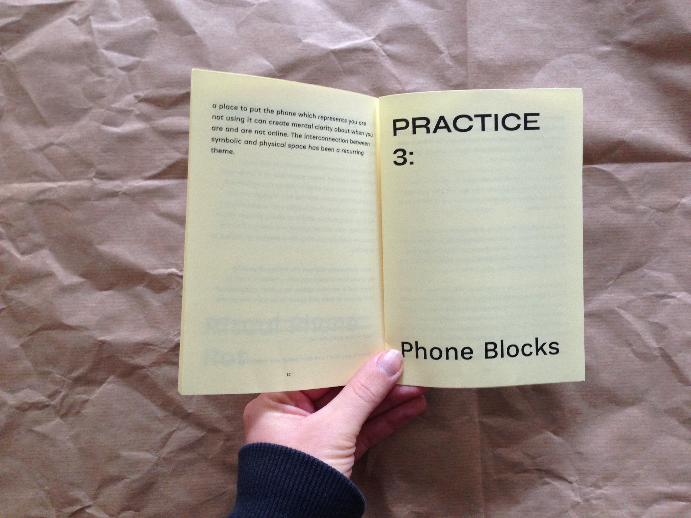

Economic Space Agency, promotional ephemera, 2024
Zine to promote the publication of Protocols for Post-Capitalist Expression, available for co-publishing at postcapitalist.agency. Zine features generative artwork by Pablo Somonte Ruano.
Economic Space Agency, NFT, 2023
Images for non-fungible token to promote the publication of Protocols for Post-Capitalist Expression, available for co-publishing at postcapitalist.agency. Edition of 601. Each NFT corresponds to a paragraph or chapter heading of the book.
I created a template using html and css. A script takes a csv as an input and exports an html page for each NFT. Another script generates "screenshots" of these pages. The metadata of each NFT includes its html version.
Panacea Publishing, wordmark, website, ephemera, 2021–2024
A brand identity and simple website for Panacea Publishing (panacea.rip), a publishing house for emerging queer literature.

How to ZEZ, mini-site, 2024
A lightweight, single-page website to introduce visitors to a house project in rural Germany. The site is written in markdown for easy editing and designed in a mobile-first fashion.

The Power Sonnets, promotional ephemera, 2022
A postcard to promote fundraising for The Power Sonnets, a book of poems by Hart L'Ecuyer.

"Rat" (film), titles, 2023
Title design for "Rat," a short queer horror film by Willow Hamilton. Typesetting for texting sequence.
 



Disconnection Practices, zine, 2019
A zine created in collaboration with Max Fowler as a part of the Disconnection Shop, a pop-up shop of tools & practices for forcibly disconnecting from your smart-phone. This zine offers suggestions about how to use your phone less. Included as a part of the 2019 CTM Transmediale Vorspeile, in Berlin.

Raging Green, album cover & micro-site, 2021


Sari-Sari, ephemera, 2018–2020
Posters, promotional images, and graphics for Sari-Sari, a collectively-run community art space (projectraum) in Berlin.
Browser Drawings, html & css, 2016
Contemplative drawings made from browser-native elements.


Yatra, typeface, 2016
Yatra is a Devanagari and Latin display font based on the hand-painted signage of the Mumbai Railways. It's available for free on Google Fonts. Yatra was the result of research from a Fulbright scholarship in India.

IF / THEN, web-to-print poster, 2017
In collaboration with Chris Hamamoto and Jon Sueda, a poster generator for the opening of the IF/THEN community work and exhibition space in Berkeley, CA. Visitors to the opening could create a poster using a custom browser-based generator.


Design Office Fellowship, poster, 2014
A web-to-print poster calling for fellows for the Design Office Fellowship. The website is the poster. The sun skews on scroll, so you can have infinite permutations of the same poster, depending on when you press ⌘P. A collaboration with John Caserta.